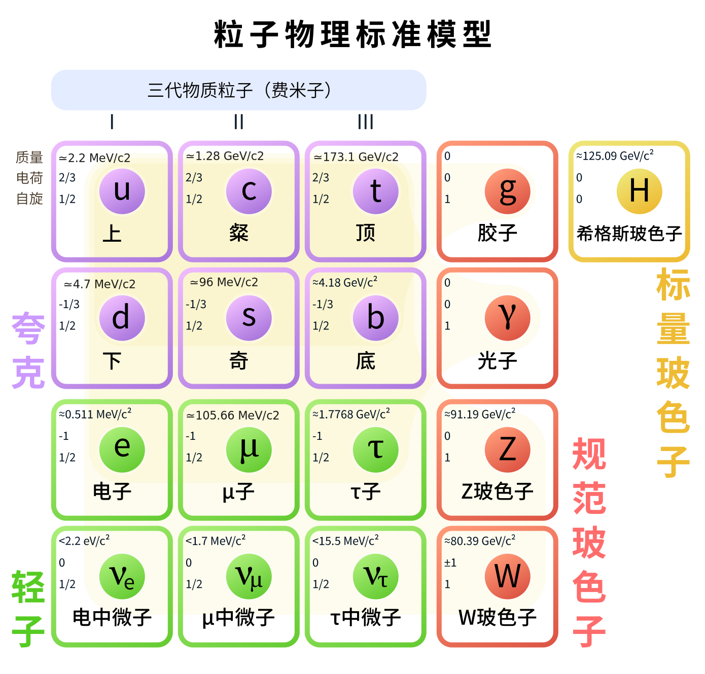

标准模型中的粒子
基本粒子¶
标准模型共含有\(61\)种基本粒子，其中\(48\)种费米子（\(12\)种轻子和\(36\)种夸克）构成物质，\(12\)种媒介子传递相互作用，\(1\)种希格斯玻色子作为质量的来源。不同种粒子的差距主要体现为各种量子数和质量的不同。
轻子（12种）¶
轻子的分类标准为四个量子数：电荷数\(Q\)，电子数\(L_e\)，\(\mu\)子数\(L_{\mu}\)和\(\tau\)子数\(L_{\tau}\)。借此，可以分出如下三代六种轻子：电子\(\mathrm{e}^{-}\)，电子中微子\(\nu_\mathrm{e}\)，\(\mu\)子\(\mu^{-}\)，\(\mu\)子中微子\(\nu_{\mu}\)，\(\tau\)子\(\tau^{-}\)和\(\tau\)子中微子\(\nu_{\tau}\)。相应量子数如下表所示
| 轻子类型 | \(Q\) | \(L_{e}\) | \(L_{\mu}\) | \(L_{\tau}\) | |
|---|---|---|---|---|---|
| 第一代 | \(\mathrm{e}^{-}\) | \(-1\) | \(1\) | \(0\) | \(0\) |
| \(\nu_\mathrm{e}\) | \(0\) | \(1\) | \(0\) | \(0\) | |
| 第二代 | \(\mu^{-}\) | \(-1\) | \(0\) | \(1\) | \(0\) |
| \(\nu_{\mu}\) | \(0\) | \(0\) | \(1\) | \(0\) | |
| 第三代 | \(\tau^{-}\) | \(-1\) | \(0\) | \(0\) | \(1\) |
| \(\nu_{\tau}\) | \(0\) | \(0\) | \(0\) | \(1\) |
上述轻子的自旋都是\(1/2\)，即它们是费米子，因此上述每种轻子都有其对应的反粒子，反粒子和相应粒子的质量相同，但所有的量子数都相反。因此还可以得到对应上述轻子的反粒子的另外六种轻子：
| 轻子类型 | \(Q\) | \(L_{e}\) | \(L_{\mu}\) | \(L_{\tau}\) | |
|---|---|---|---|---|---|
| 第一代 | \(\mathrm{e}^{+}\) | \(1\) | \(-1\) | \(0\) | \(0\) |
| \(\bar{\nu}_\mathrm{e}\) | \(0\) | \(-1\) | \(0\) | \(0\) | |
| 第二代 | \(\mu^{+}\) | \(1\) | \(0\) | \(-1\) | \(0\) |
| \(\bar{\nu}_{\mu}\) | \(0\) | \(0\) | \(-1\) | \(0\) | |
| 第三代 | \(\tau^{+}\) | \(1\) | \(0\) | \(0\) | \(-1\) |
| \(\bar{\nu}_{\tau}\) | \(0\) | \(0\) | \(0\) | \(-1\) |
夸克（36种）¶
夸克的分类标准为分数电子数\(Q\)和四个整数量子数：奇异数\(S\)，粲数\(C\)，顶数\(U\)和底数\(B\)。为了自洽，下列的表格中还列出下数\(D\)和上数\(U\)，但他们对夸克的分类是不必要的，通过其他量子数已经可以确认夸克类型。
由五个量子数可以分出六种夸克
| 夸克类型 | \(Q\) | \(D\) | \(U\) | \(S\) | \(C\) | \(B\) | \(T\) | |
|---|---|---|---|---|---|---|---|---|
| 第一代 | \(\mathrm{d}\) | \(-1/3\) | \(-1\) | \(0\) | \(0\) | \(0\) | \(0\) | \(0\) |
| \(\mathrm{u}\) | \(2/3\) | \(0\) | \(1\) | \(0\) | \(0\) | \(0\) | \(0\) | |
| 第二代 | \(\mathrm{s}\) | \(-1/3\) | \(0\) | \(0\) | \(-1\) | \(0\) | \(0\) | \(0\) |
| \(\mathrm{c}\) | \(2/3\) | \(0\) | \(0\) | \(0\) | \(1\) | \(0\) | \(0\) | |
| 第三代 | \(\mathrm{b}\) | \(-1/3\) | \(0\) | \(0\) | \(0\) | \(0\) | \(-1\) | \(0\) |
| \(\mathrm{t}\) | \(2/3\) | \(0\) | \(0\) | \(0\) | \(0\) | \(0\) | \(1\) |
媒介子（12种）¶
传递相互作用
希格斯粒子（1种）¶
123
由基本粒子构成的粒子¶
强子¶
介子和重子
总结¶
我们已经知道三代物质粒子都是费米子，因此它们都有反粒子；我们也知道色荷的区别将夸克分为3种，胶子分为8种。现在如果默认这一点，就可以简单写出如下图所示的标准模型粒子示意图
